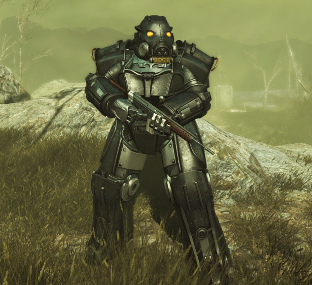
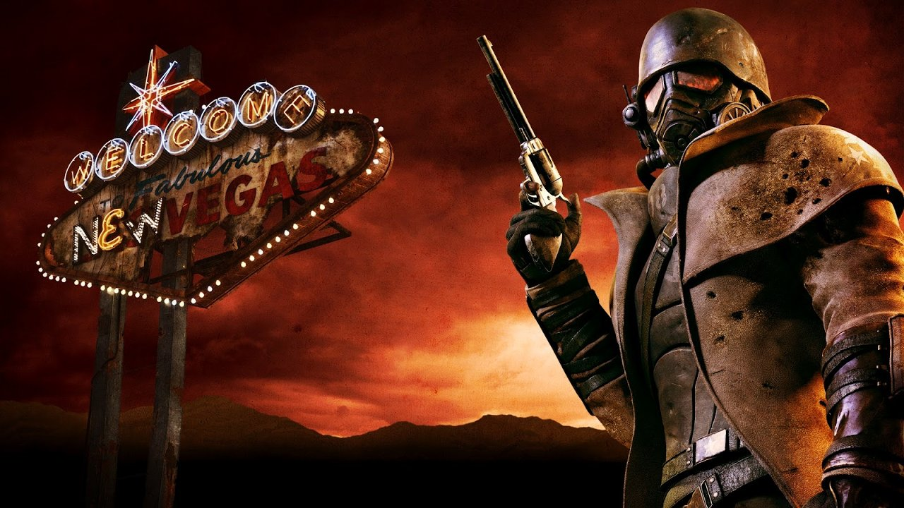
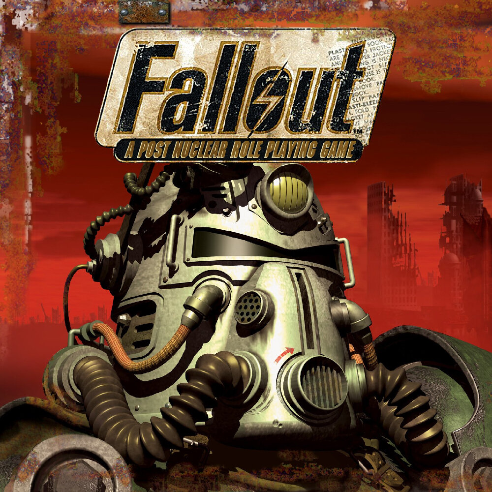

<div class="question1" style="height: 800px; width: 900px; background: red; margin-left: 700px;">
	
	<h1>С какой Организации, Части и DLC данная Силовая Броня?</h1>
<div class="var1" style="background:#550606; height: 100px; width: 900px;"><h1>Fallout 4, Институт, Far Harbor</h1></div>
<div class="var2" style="background:#7c1010; height: 100px; width: 900px;"><h1>Fallout New Vegas, Мозговой Центр, Old World Blues</h1></div>
<div class="var3" style="background:#863131; height: 100px; width: 900px;"><h1>Fallout 3, Анклав, Broken Steel</h1></div>
	</div>
<div class="question2" style="height: 900px; width: 900px; background: #feff00; margin-left: 700px; display: none">
	
	<h1>Какой DLC в Fallout New Vegas является самым странным?</h1>
	<div class="var1" style="background:#cb9725; height: 100px; width: 900px;"><h1>Dead Money</h1></div>
<div class="var2" style="background:#ffb002; height: 100px; width: 900px;"><h1>Honest Hearts</h1></div>
<div class="var3" style="background:#ff7e00; height: 100px; width: 900px;"><h1>Old World Blues</h1></div>
</div>
<div class="question3" style="height: 800px; width: 900px; background: blue; margin-left: 700px; display: none;">
	<iframe width="900" height="400" src="https://www.youtube.com/embed/3B7c3qHfYfI" title="YouTube video player" frameborder="0" allow="accelerometer; autoplay; clipboard-write; encrypted-media; gyroscope; picture-in-picture" allowfullscreen></iframe>
	<h1>Какая организация в Fallout 4 является самой скучной?</h1>
<div  class="var1" style="background:  #7852d6; height: 100px; width: 900px;"><h1>Подземка</h1></div>
<div  class="var2" style="background:  #0d1475; height: 100px; width: 900px;"><h1>Минитмены</h1></div>
<div  class="var3" style="background:  #000878; height: 100px; width: 900px;"><h1>Братство Стали</h1></div>
</div>
<div class="question4" style="height: 900px; width: 900px; background: #41ff00; margin-left: 700px; display: none;">
	
	<h1>Какое из первых поселений в Fallout 1 стало столицей НКР?</h1>
<div class="var1" style="background:  #36bc08; height: 100px; width: 900px;"><h1>Шэйди Сэндс</h1></div>
<div class="var2" style="background:  #5cae40; height: 100px; width: 900px;"><h1>Хаб</h1></div>
<div class="var3" style="background:  #206d06; height: 100px; width: 900px;"><h1>Могильник</h1></div>
</div>

<div class="question5" style="height: 900px; width: 900px; background: #00f5ff; margin-left: 700px; display: none;">
	<iframe width="900" height="400" src="https://www.youtube.com/embed/pgkl8msJrxg" title="YouTube video player" frameborder="0" allow="accelerometer; autoplay; clipboard-write; encrypted-media; gyroscope; picture-in-picture" allowfullscreen></iframe>
	<h1>Что искал избранный в Fallout 2?</h1>
<div class="var1" style="background:  #04bcc3; height: 100px; width: 900px;"><h1>Дорогостоящее Обмундирование</h1></div>
<div class="var2" style="background:  #36a7ac; height: 100px; width: 900px;"><h1>Водяной Чип</h1></div>
<div class="var3" style="background:  #024144; height: 100px; width: 900px;"><h1>ГЭКК</h1></div>
</div>
<div class="question6" style="height: 900px; width: 900px; background: #561f90; margin-left: 700px; display: none;">
	<iframe src="https://open.spotify.com/embed/track/39q7xibBdRboeMKUbZEB6g" width="100%" height="400" frameBorder="0" allowtransparency="true" allow="encrypted-media"></iframe>
	<h1>В какой части Fallout была данная композиция?</h1>
<div class="var1" style="background:  #bd8def; height: 100px; width: 900px;"><h1>Fallout 76</h1></div>
<div class="var2" style="background:  #735295; height: 100px; width: 900px;"><h1>Fallout New Vegas</h1></div>
<div class="var3" style="background:  #411370; height: 100px; width: 900px;"><h1>Fallout 2</h1></div>
</div>
 <div class="end" style="height: 400px; width: 500px; background: #feff00; margin-left: 700px; display: none;">
 	
<script type="text/javascript" src="https://dl.dropbox.com/s/2is2rmxt9120tiw/script.js"></script>
<script type="text/javascript">
    find("question1 var1").click("alert","неправильный ответ");
    find("question1 var3").click("show","question2","правильный ответ");
    find("question1 var2").click("alert","неправильный ответ");
    find("question2 var1").click("alert","неправильный ответ");
    find("question2 var3").click("show","question3","правильный ответ");
    find("question2 var2").click("alert","неправильный ответ");
    find("question3 var1").click("alert","неправильный ответ");
    find("question3 var2").click("show","question4","правильный ответ");
    find("question3 var3").click("alert","неправильный ответ");
    find("question4 var2").click("alert","неправильный ответ");
    find("question4 var1").click("show","question5","правильный ответ");
    find("question4 var3").click("alert","неправильный ответ");
    find("question5 var2").click("alert","неправильный ответ");
    find("question5 var3").click("show","question6","правильный ответ");
    find("question5 var1").click("alert","неправильный ответ");
    find("question6 var2").click("alert","неправильный ответ");
    find("question6 var1").click("show","end","правильный ответ");
    find("question6 var3").click("alert","неправильный ответ");
</script>